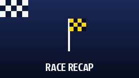

-
March 2026

A Dramatic Season Opener in Australia
Isack Hadjar's first weekend in Red Bull colours could not have started better, qualifying a superb third at Albert Park. Race day was crueller: Hadjar retired early with a technical issue, while Max Verstappen fought back from a Q1 crash and a P20 start to cross the line sixth. Mercedes' George Russell took the win as F1's new regulation era got underway.
Read more >> -
April 2026
A Tricky Start Drops the Team Down the Order
Reliability troubles in China and Japan left Red Bull Racing sixth in the Constructors' standings after three rounds, behind both Haas and Alpine. Both cars suffered power unit issues, and neither driver hid their frustration — but with a brand new Ford-powered car, the team said there was time to turn things around.
Read more >> -
July 2026
Form Is Turning — Upgrades Pay Off in Austria
A substantial upgrade package brought the team its best result of the season in Austria, with Verstappen briefly in the fight for victory. Hadjar has been closing the gap all year too, out-qualifying his four-time-champion team-mate more than once already. Next up: adapting that form to Silverstone's high-speed layout for the British Grand Prix.
Read more >>